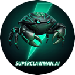

Superclawman.aiE se a R11 respondesse agora, no WhatsApp?
Um exemplo criado para a R11 Travel. Agência, pessoas e números são fictícios, e não há integração com os sistemas da R11.
Vamos conversar?
superclawman.ai

Superclawman.aiUm exemplo criado para a R11 Travel. Agência, pessoas e números são fictícios, e não há integração com os sistemas da R11.